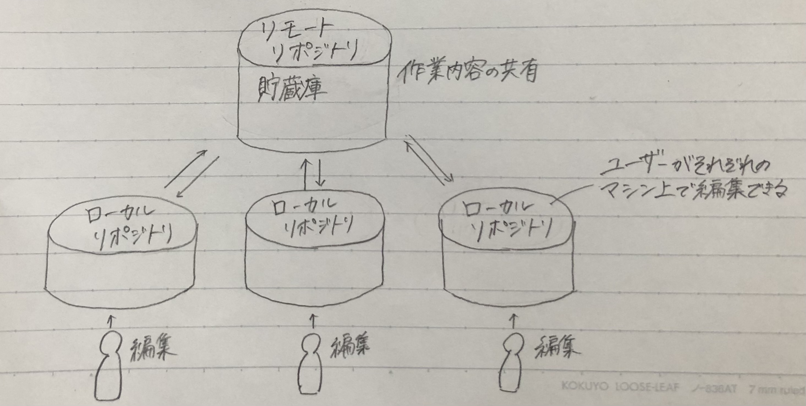

第１回課題
gitについて
- gitとは…分散型バージョン管理システム
・ローカルリポジトリ（リポジトリをコピーしたもの）を編集者が所有することで、それぞれが自由にファイルを編集できる。

- gitの仕様
・gitはCUI(キャラクターベースユーザーインターフェース)ツール、CUIツールはキーボードで入力するコマンドによって操作するツール
・CUIツール⇔GUI(グラフィカルユーザーインターフェース)ツール、GUIツールはマウスの動き、クリックなどで操作するツール
共有されたコマンドを入力するだけで同じ現象が再現されるので、複数人での作業に適している。
- gitでできること
・ファイルの変更履歴の管理
誰が、いつ、何を変更したのかという履歴を記録・追跡することができる。
そのため、ファイル名をいちいち変えて保存しておく必要がない。
・履歴をたどってファイルを過去の状態に戻せる。
・Excelのファイルや、画像など様々なものが管理できる。
・複数人でファイルを共有して、それを個人で編集できる。
- gitを使う場面…プログラミング、Webデザイン、Webライターなど
- gitとgithubの違い
・git→編集履歴を正確に把握できるバージョン管理システム
・github→複数のユーザーが、編集したデータを保存・共有するなどのコミュニケーションをとりやすいように整備されたWEBサービス
参考サイト
【初心者向け】Gitとは何なのか。基本用語やその仕組みをまとめています。
【絶対理解できる】Gitとは？特徴やできることまとめ
htmlについて
- htmlとは
・ハイパー・テキスト・マークアップ・ランゲージの略。
・Webサイトに表示される画面をつくる言語。
・＜＞←この記号で文章を囲み(タグ付け)、コンピューターに文章構造を指示することで、Webサイトサイトに見出しを付けたり、URLや写真を表示したりといった様々なことができる。
・Webサイト以外にも、htmlメール、GmailやYoutubeなどのWebブラウザ上で動作するアプリの作成ができる。
- 授業で使った記号(タグ)
・＜head＞…ページタイトルやページ概要など、Webサイトの上部のコンテンツを表す。
・＜body＞…Webサイトの本文。ユーザーに見せたい部分は基本的にここに記述する。
・＜div＞…囲った範囲をグループ化する。
・＜br＞…文章を改行する。
・＜ol＞…箇条書きをする。
・＜img＞…画像を表示する。
・＜a＞…リンクを表示する。
・＜title＞…タブに表示されるタイトル。
参考サイト
HTMLとは？初心者向けに簡単に解説！基本知識やタグ一覧も紹介